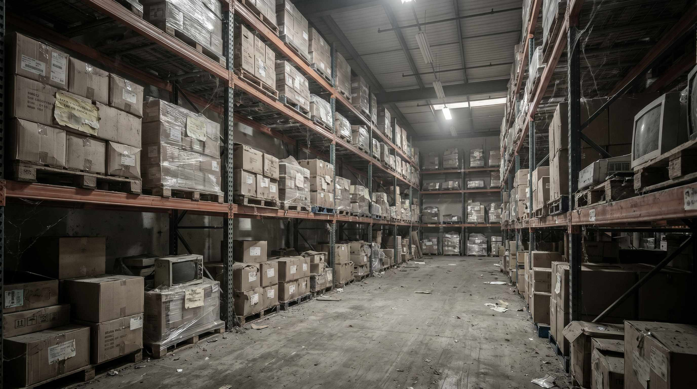

På ethvert lager der har eksisteret i mere end et år, er der varer der bare står. En sæsonlinje der ikke gik som forventet. Et produkt der pludselig faldt ud af modellen. Et parti der var for billigt at lade være med at kobe.
De fleste behandler disse varer som et ikke-problem. De er betalt, de fylder ikke aendele, og en dag finder vi en løsning.
Problemet er at de koster penge. Hver maaned. Stille og roligt.
👉 SmartPack viser din lageromstigning og identificerer dead stock automatisk. Se funktionen
Hvad er dead stock?
Dead stock er varer på lageret der ikke har været plukket i lang tid og sandsynligvis ikke vil blive solgt til fuld pris. En tommelfingerregel:
- En vare er potentielt dead stock når den ikke er plukket i 90 dage.
- Den er dead stock når der ikke er nogen forventning om eftersporgsel inden for de næste 60 dage.
- Sæsonvarer er dead stock når sæsonens er forbi og beholdningen er over dit realistiske næste-sæson-estimat.
Boer du ikke have lidt buffer? Jo. Men der er forskel på buffer og begravelse. 10 styk af en populaer vare er buffer. 200 styk af en vare der senest solgte to om maaneden er dead stock.
Hvad koster det?
Dead stock koster på tre maader:
- Bundet kapital. Du har betalt for varerne. De penge er laast fast og kan ikke bruges til noget andet, fx indkøb af varer der faktisk saelger, markedsfoering eller drift. Regn med en kapitalomkostning på 10-15% af vaerdien om året (rente, alternativ investering).
- Spildt lagerplads. Varerne optager kvadratmeter du betaler husleje for. Hvis din husleje er 80 kr./kvm/maaned og dead stock optager 20 kvm, er det 1.600 kr. om maaneden i spildt husleje.
- Administrativ tid. Dead stock skal taelles ved revisioner, haandteres ved flytninger og besluttes om. Det er tid der ikke bruges på noget vaerdiskabende.
Samlet koster dead stock typisk 20-30% af varens indkøbsvaerdi om året at have staaende. For en beholdning med dead stock på 100.000 kr. er det 20.000-30.000 kr. om året i stiltiende tab.
SÃ¥dan identificerer du det
Se på din lageromstigning (dage på lager). Enhver vare med mere end 90 dage på lager og ingen fremtidige ordrer er kandidat til gennemgang.
I SmartPack ser du lageromstigning direkte på produktoversigten. Du kan sortere på "sidst plukket" og filtere på varer der ikke har været plukket i de seneste 60-90 dage. Det tager et par minutter at generere listen.
Lav denne gennemgang maanedligt. Ikke årligt. Nyt dead stock opstår hele året, og jo laengere du venter, des sværere er det at gøre noget ved det.
Hvad du gør ved det
Ingen af disse muligheder er gode. Men de er alle bedre end fortsat at betale husleje for varerne:
- Bundlpakke med aktive produkter. Tilfoej dead stock som gratis gave eller til nedsat pris ved kob af en aktiv vare. Det kan øge den aktive vares konverteringsrate og faa dead stock ud.
- Prisnedsat udsalg på webshopen. Slaeb prisen ned og accepter et tab. Det er bedre end et større tab senere. Mange kunder kober ved 40-60% rabat selv på nicheprodukter.
- Salg til restparti-opkøber. Der er opkøbere der kober hele partier af dead stock for 10-30 cent af kostpris. Du får ikke meget, men du får kapital hjem og befryer lagerplads.
- Donation. For tekstil, mad og noget elektronik er donation muligt. Giver ingen direkte indtoegt, men frigiver plads og kan give skattefradrag.
- Kassation. Sidste udvej. Men bedre end at betale husleje i 3 år til for et produkt der aldrig saelger.
Forebyggelse er billigere end behandling
De vigtigste forebyggende tiltag:
- Brug salgsdata aktivt inden indkøb. Genindkob kreaever minimum 10 salg om maaneden som tommelfingerregel.
- Saet automatiske advarsler når en vare ikke er plukket i 60 dage. I SmartPack kan du konfigurere lageradvarsler pr. produkt.
- Mareker sæsonvarer ved ankomst. Saa ved du at de skal gennemgaes efter sæsonen, og ikke bare glemmes.
- Haandter overskudsbeholdninger proaktivt. Sae et udsalg i tide, inden de er helt glemte.
Dead stock er aldrig planlagt. Det opstår når beslutninger om indkøb tages uden data. Et WMS som SmartPack giver dig salgsdata og lageromstigning til at tage bedre beslutninger fra start.